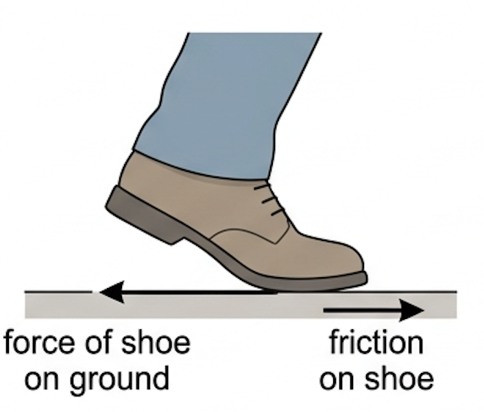
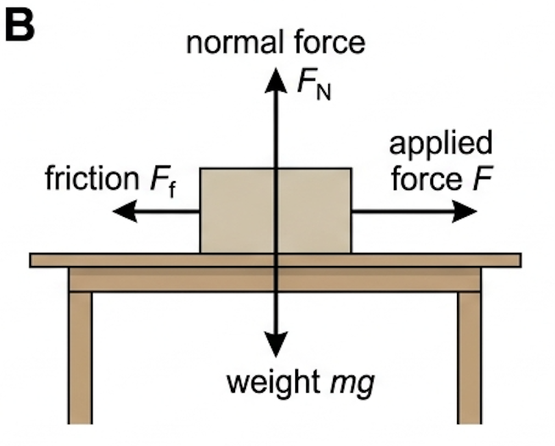
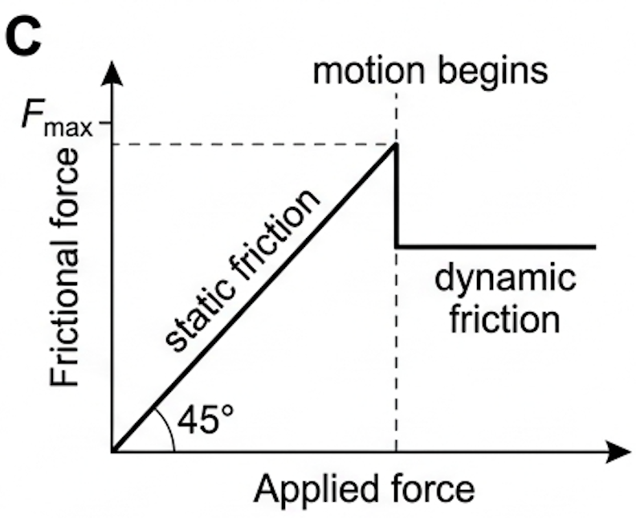
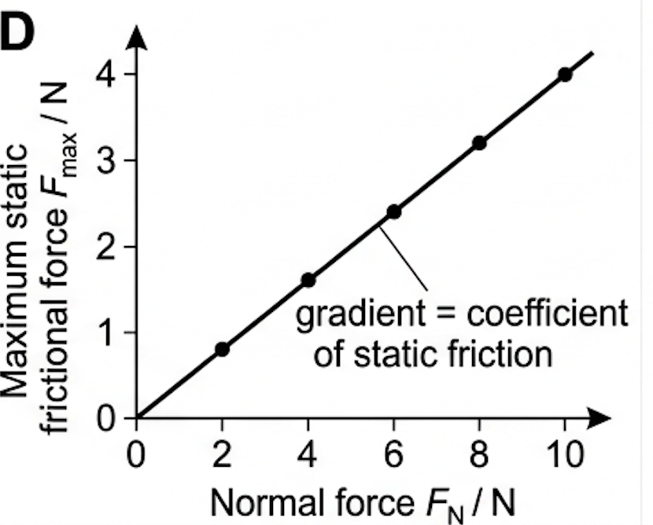
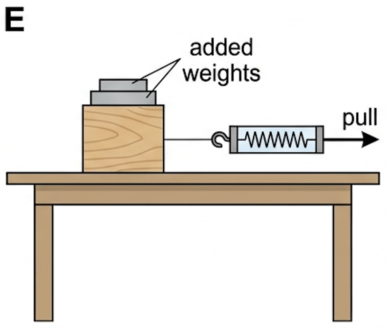
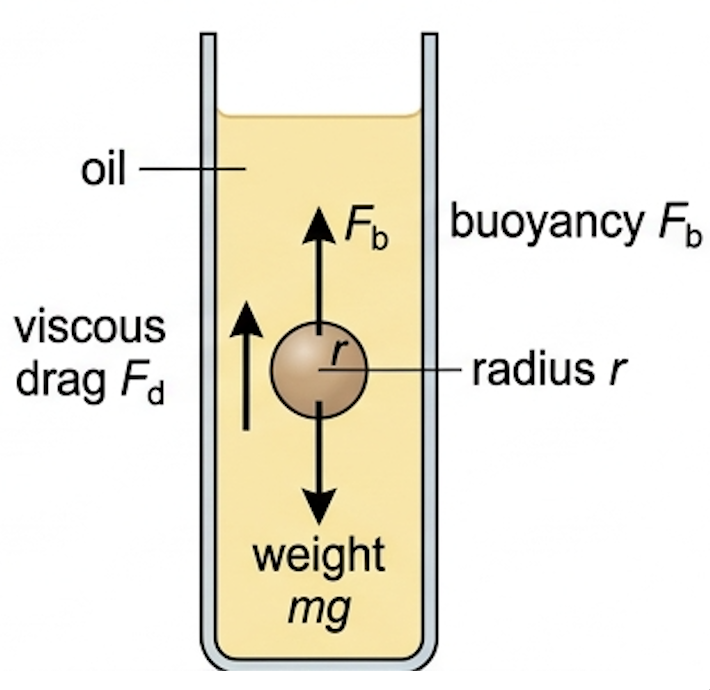

🎯 Hook – the step you never think about
Stand up and take one step. Your shoe pushes backwards on the floor; friction pushes your shoe forwards with an equal force, and that forward push is the only thing moving you. Take friction away — spill oil, or step onto wet ice — and the push still happens, but you go nowhere. Friction is not the enemy of motion; on land it is the source of it.

📐 Normal force, static friction and dynamic friction
Surface friction is the collection of forces acting parallel to the plane of contact between two surfaces, opposing relative motion or attempted motion. It always acts alongside the normal contact force \(F_{\text{N}}\), which acts perpendicular to that same surface.
While the object is stationary the friction is static friction. It grows to match the applied force up to a limiting value \(F_{\text{max}}\). Once the object slides, the friction drops slightly and becomes dynamic friction, which is roughly constant regardless of speed.
The coefficient of friction \(\mu\) has no units — it is a ratio of two forces, and it describes the pair of surfaces, not either surface alone. For most pairs \(\mu_{\text{d}} < \mu_{\text{s}}\), which is why a stuck box lurches forward the moment it breaks free.

| Surfaces | Approximate \(\mu_{\text{s}}\) |
|---|---|
| Steel on ice | 0.03 |
| Wood on concrete | 0.3 |
| Rubber tyre on wet road | 0.5 |
| Rubber tyre on dry road | 0.8 |
| Glass on glass | 0.9 |
📈 Graphs every examiner uses
| Graph type | Axes (X, Y) | Shape | What to read |
|---|---|---|---|
| Friction vs applied force | Applied force \(F\), frictional force \(F_{\text{f}}\) | Straight line at 45° up to \(F_{\text{max}}\), then a drop to a lower horizontal line | Peak value = \(F_{\text{max}} = \mu_{\text{s}}F_{\text{N}}\); the flat part = dynamic friction |
| Maximum static friction vs normal force | \(F_{\text{N}}\), \(F_{\text{max}}\) | Straight line through the origin | Gradient = \(\mu_{\text{s}}\) (no units) |
| Dynamic friction vs speed | Speed \(v\), \(F_{\text{f}}\) | Horizontal line | Dynamic friction is independent of speed |


✍️ Worked example – shifting a wooden crate

🔧 Real-world: tyres and stopping distance
Braking relies entirely on friction between tyre and road. Dry asphalt gives \(\mu_{\text{s}} \approx 0.8\); wet asphalt about 0.5. Tread grooves exist to disperse water so the rubber can still touch the road — a smooth tyre actually grips better when dry, which is why racing slicks are illegal in the rain.
🚀 HL Extension – viscous drag and Stokes's law
Fluids resist motion too. For a small smooth sphere moving slowly enough to avoid turbulence, the drag force is
where \(\eta\) is the viscosity in Pa s. At terminal speed the sphere is in equilibrium: \(F_{\text{d}} + F_{\text{b}} = mg\).
Challenge: A steel ball of radius 1.0 mm falls at 0.050 m s⁻¹ through oil of viscosity 0.70 Pa s. Find the viscous drag. (Answer: \(6\pi \times 0.70 \times 1.0\times10^{-3} \times 0.050 = 6.6\times10^{-4}\ \text{N}\))

⚠️ Trap corner – common mistakes
| Misconception | Correct view |
|---|---|
| A bigger contact area means more friction | Area cancels out. Double the area and the force per unit area halves, leaving \(F_{\text{f}}\) unchanged. |
| Static friction always equals \(\mu_{\text{s}}F_{\text{N}}\) | That is only its maximum. Below it, static friction equals the applied force exactly: \(F_{\text{f}} \le \mu_{\text{s}}F_{\text{N}}\). |
| \(F_{\text{N}}\) is always equal to \(mg\) | Only on a horizontal surface with no other vertical force. On an incline \(F_{\text{N}} = mg\cos\theta\); pushing down at an angle increases it. |
| Friction always slows things down | Friction opposes relative sliding. For walking, driving and cornering it is the force that produces the acceleration. |
| Dynamic friction grows with speed | It is taken as constant with speed. Speed-dependent resistance is fluid drag, not surface friction. |
Complete the statements:
(b) Explain why a car's braking distance is longer on a wet road than on a dry one. [3]
(b) ✓ Water between tyre and road reduces the coefficient of friction. ✓ The maximum frictional force \(\mu F_{\text{N}}\) is therefore smaller. ✓ Smaller decelerating force means a smaller deceleration, so the car travels further before stopping.
(a) Calculate the minimum horizontal force needed to start the crate moving. [2]
(b) The crate is then pushed with a constant horizontal force of 110 N. Calculate its acceleration. [3]
(b) ✓ Now sliding, so \(F_{\text{f}} = 0.30 \times 245 = 73.5\ \text{N}\). ✓ Resultant \(= 110 - 73.5 = 36.5\ \text{N}\). ✓ \(a = F/m = 36.5/25 = 1.5\ \text{m s}^{-2}\).
(a) Sketch a graph of the frictional force on the block against the applied force, labelling \(F_{\text{max}}\). [3]
(b) Discuss one reason why the value of \(\mu_{\text{s}}\) obtained from this experiment may be unreliable. [2]
(b) ✓ The pull is increased by hand, so the peak reading is hard to catch and is easily overshot or missed. ✓ Surface condition varies across the bench (dust, wear, uneven contact), so repeats scatter and \(\mu_{\text{s}}\) is not a single fixed value.